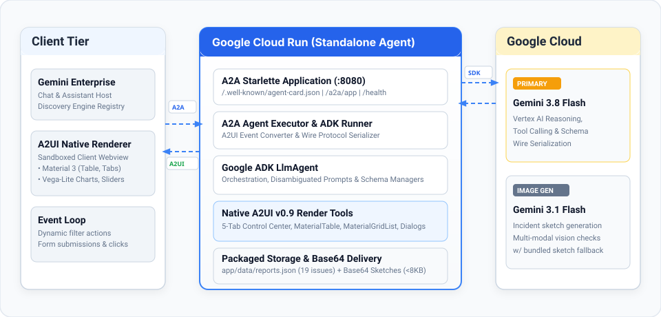

Reference agent · Google ADK · A2A · Cloud Run
Operations Control Center
An ADK agent that answers in Gemini Enterprise with native, interactive A2UI v0.9 cards (tables, a sketch gallery, charts and forms), served from one private Cloud Run service.
Executive summary
Enterprise agents usually answer in text, or send people to a separate web app. This agent returns A2UI v0.9 JSON instead, and Gemini Enterprise draws it with its own Material 3 components, right in the chat. A five-tab operations card, a dialog, a menu and a dispatch form all update in place. Everything, including the images, ships in one private Cloud Run service, and one script deploys it and registers it with Gemini Enterprise.
01 The problem
Incident lists turn into pages of markdown, a service request turns into twenty questions, and trends are reduced to numbers in a sentence.
An iframe or linked web app needs its own hosting, sign-in, CORS rules and often a public image bucket, and it takes the user out of the conversation.
The agent sends declarative JSON and the client renders it with its own trusted components. No HTML or script crosses the wire, and the user never leaves the chat.
02 Six design choices
-
Native A2UI v0.9 messages
createSurface,updateComponentsandupdateDataModelagainst the Gemini Enterprise composite catalog. The client draws its own Material 3 components.app/render_tools.py -
One card, updated in place
Dialog, menu and form choices go back to the agent, which answers with
updateDataModelfor the same surface instead of posting a new card.app/agent_executor.py · app/render_tools.py -
Private by default
Cloud Run with
--no-allow-unauthenticated. Only the Gemini Enterprise service agent getsroles/run.invoker, and the service runs as a dedicated account with onlyroles/aiplatform.user.deploy.sh -
No public assets
The 19 seed sketches, the banner and the icon ship in the container and go out as base64 data URIs (320 px JPEG thumbnails). No bucket, CDN or CORS rules.
app/report_tools.py -
Small prompts, valid payloads
Cards the user already has are replaced with a one-line note before each model call. A hardened parser and the executor repair combined or malformed A2UI messages before they reach the client.
app/agent.py · app/app_utils/a2ui_payload_patch.py -
Cost guardrails
One instance by default, length-limited fields, identical reports within two minutes deduplicated, and a bundled sketch when image generation is unavailable.
deploy.sh · app/render_tools.py · app/report_tools.py
03 How a request flows

- AskA user types in Gemini Enterprise, for example “Show me the operations control center”.
- CallGemini Enterprise calls the registered A2A agent with its service agent's ID token. Cloud Run IAM checks the invoker role.
- ReasonThe ADK agent (Gemini 3.8 Flash on Vertex AI) picks a skill:
manage_operationsorfile_report. - BuildTools build the A2UI messages. The executor splits and repairs them and returns them over A2A with the A2UI v0.9 extension.
- RenderGemini Enterprise draws the card natively. Clicks, chips, sliders and form submits come back as events, and the agent updates the same card.
- SketchA new report gets an inspection sketch from the Gemini image model, or a bundled one if generation is unavailable.
04 Component and codebase map
| Component | Source | What it does |
|---|---|---|
| A2A server | app/main.py | Starlette app: A2A endpoint, agent card, /health, /feedback, optional ID-token middleware. |
| Agent | app/agent.py | ADK LlmAgent: instructions, tools and the callback that trims cards already shown. |
| Executor | app/agent_executor.py | A2A executor: splits combined A2UI parts, repairs catalog IDs and converts client events. |
| Surfaces | app/render_tools.py | The five-tab dashboard, dialog, menu, dispatch form and the file_report tool. |
| Reports and sketches | app/report_tools.py | Demo report store, sketch generation with fallback, and thumbnails as data URIs. |
| Payload repair | app/app_utils/a2ui_payload_patch.py | Hardened parser that merges concatenated A2UI messages and restores dropped commas. |
| Optional auth | app/auth_middleware.py | ID-token check for hosting outside Cloud Run (off by default). |
| Deploy | deploy.sh | Preflight, APIs, runtime service account, private deploy, invoker grant, smoke test, registration. |
| Registration | register_gemini_enterprise.py | Registers, updates or deletes the agent in a Gemini Enterprise app (HTTPS only). |
| Tests | tests/unit/ | 71 unit tests: surfaces, filters, dedup, form limits, dialog and menu, prompt size, auth and registration. |
05 Try it
git clone https://github.com/yonitg/ge-agent-a2ui.git
cd ge-agent-a2ui
# optional: register in your Gemini Enterprise app
export GEMINI_ENTERPRISE_ENGINE_ID=<your-app-id>
./deploy.sh <PROJECT_ID>Then ask Gemini Enterprise
- “Show me the operations control center”
- “List active building incidents”
- “Show the visual sketch gallery”
- “Report a broken chair in the Yellow Room”